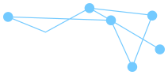
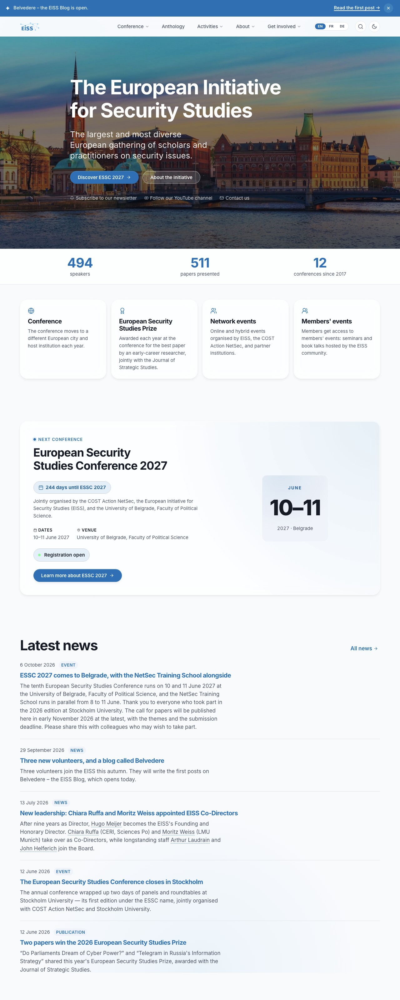
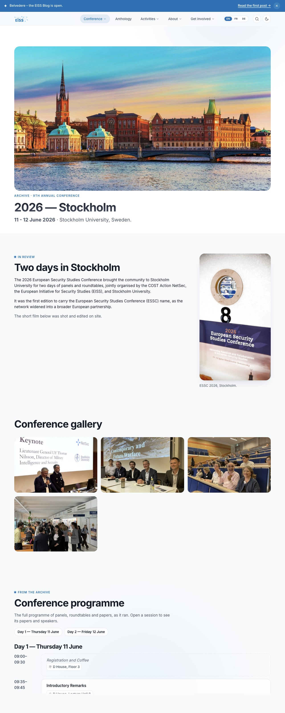
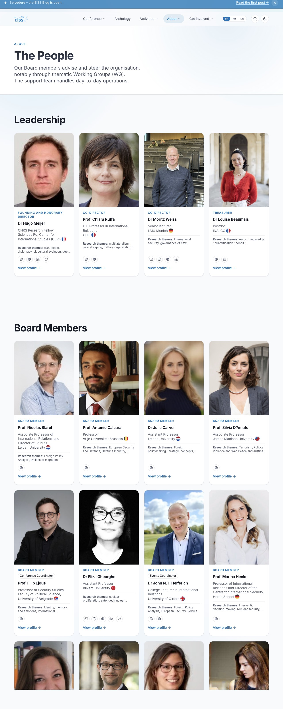
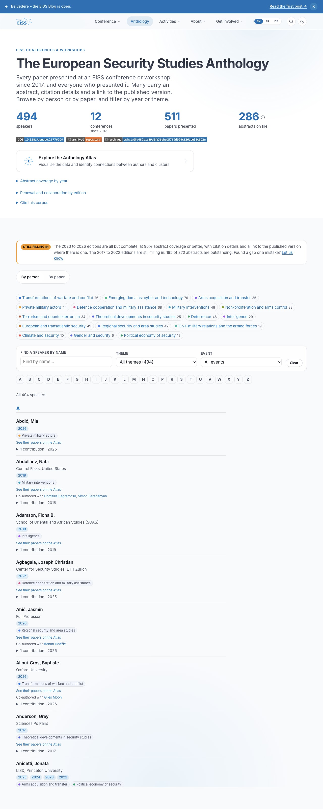
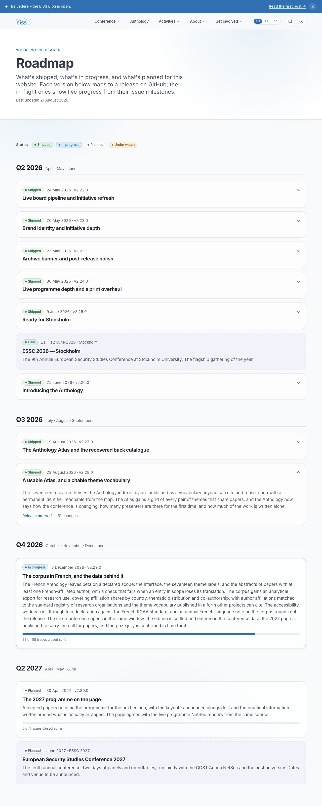
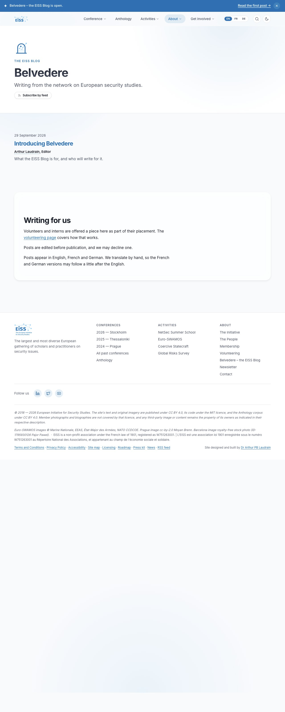

European Initiative for Security StudiesA self-contained reference for anyone who maintains, inherits or evaluates the EISS website. Each chapter stands alone. Read it end to end for a tour, or go straight to the section you need. Each pipeline also has its own document under docs/ in the repository, and where the two disagree, the repository document is newer.
The EISS website is the public home of the European Initiative for Security Studies, served at eiss-europa.com. It carries the annual European Security Studies Conference (ESSC) from the call for papers to the archive, the board and its support staff, the Anthology of every paper presented since 2017, the Belvedere blog, news, and the Initiative's membership and prizes.
It is a static site. Eleventy builds it from templates and data files, GitHub Pages serves it, and scheduled GitHub Actions keep its data in step with the systems that own it: Indico for the programme, a Google Form for board biographies, ORCID for members' publications, and the NetSec directory for cross-links. There is no database, no content management system and no server of the Initiative's own.
None of the site's readers are developers, and none of them should need to know how it is built.
Prospective and returning conference participants, and researchers using the Anthology, the Atlas and the paper pages as a record of the field.
Looking for an expert, a press kit or a quotable fact about European security studies.
Reading the board page, the internship and volunteering pages, and how to become a member.
Hosts and co-organisers of past and future conferences, and the NetSec COST Action, which links into the Anthology from its own site.
<details>, deep links are anchors, embeds load on click. Script is added only where the page still works without it.src/_data/ through a single partial, so the copies cannot drift apart.
The build is Eleventy 3 with Nunjucks templates, plus Pagefind for site search. The site has three npm development dependencies (Eleventy, the acorn parser used by a build check, and axe-core for the accessibility audit) and no runtime dependency at all. There is no front-end framework, no bundler and no transpiler. The data pipelines are short Python and Node scripts under scripts/.
master.Three points to take from the diagram:
.github/workflows/deploy.yml runs on every push to master, once a day at 04:15 UTC, and on demand. It installs the npm dependencies, runs the Eleventy build into _site/, builds the Pagefind search index into _site/pagefind/ with a pinned Pagefind version, uploads _site/ as a Pages artefact and deploys it. The search index exists only on the deployed site, so search on a local build shows as unavailable.
The daily run matters because some pages depend on the date. src/_data/conferences.js sorts editions into next, upcoming and past by today's date, and the countdown and registration badge follow from that. Without a daily build, the home page would keep pointing at a conference that had already happened.
Static assets are cache-busted by a bust filter, which appends the first eight hex digits of the file's SHA-256 (site.css?v=…). A change to a shared asset therefore touches every page, and the translation drift checker and the link checker both see it.
The site is built from about seventy English templates under src/, twenty-seven of them with French and German siblings. Paginated templates expand into many pages: one per paper (315 paper pages, each with BibTeX and RIS exports), one per research theme with its own Atom feed (seventeen), and one search stub per person per language. A full build writes about 1,460 files.
| Feature | Where | Fed by |
|---|---|---|
| Live conference programme, registration badge, livestream block | /2026 and later year pages | Indico, through indico.json |
| Conference archive, every past programme in the live grid's shape | /past, /YYYY | archiveProgrammes.js, transcribed from the final programmes |
| The Anthology: every paper since 2017, filterable by theme, year and person | /anthology, /papers/<slug> | corpus.js over the programmes, plus paperAbstracts.json |
| The Atlas, a network map of the field's seventeen themes | /anthology-atlas | anthologyAtlas.js |
| Board and support staff, with past members folded away | /board | The Google Form, through board.json |
| Members' publications | /publications | ORCID, through orcidWorks.json |
| Published versions of conference papers | Paper pages | paperLinks.json, matched by match-publications.mjs |
| Belvedere, the EISS blog | /blog | Markdown posts under src/blog/ |
| News and the Atom feed | /news, /feed.xml | news.json, or an issue labelled news |
| Site search, pages and people | Search modal on every page | Pagefind, built at deploy |
| Public roadmap with progress bars | /roadmap | roadmap.js and roadmap-progress.json |
| Machine-readable corpus: theme vocabulary, paper and author indexes | /data/…, /vocab/… | Built from corpus.js |

roleEndDate, never by deleting the entry.The sync matches a submission to an existing entry by first and last name, ignoring titles, so a person who adds a middle initial or a title is not duplicated. Since October 2026 it also refuses to write board.json if two entries would share a name: a duplicate once stopped the build for four days. Full setup in docs/board-bios-setup.md.

The token belongs to a dedicated service account on Indico, never to a person's login. Its lifecycle is in docs/indico-api-token.md, and adding a conference year is in docs/new-conference.md.
| Workflow | When | What it maintains |
|---|---|---|
sync-orcid.yml | Weekly | Members' recent public ORCID works, in orcidWorks.json. |
sync-publications.yml | Weekly | Published versions of conference papers. High-confidence matches publish automatically. A mid-confidence band waits for a person to confirm it, because a wrong match mis-cites. |
sync-netsec-directory.yml | Weekly, and on a signal from NetSec | A mirror of the NetSec directory, so an Anthology author with a NetSec profile links to it. |
roadmap-refresh.yml | Daily | The [Unreleased] count in the roadmap document and the milestone progress bars on /roadmap. |
news-publish.yml | When an issue is labelled news | Appends the issue to news.json. A title starting [test] opens the PR without merging it. |
abstract-coverage.yml | Every four months | A report of which papers still lack an abstract. |
The two sites link to each other through published index files rather than by scraping each other's pages. EISS publishes /data/anthology-index.json (one record per paper) and /data/authors-index.json (one per author), rebuilt from the corpus on every deploy. NetSec publishes directory-index.json, which the EISS sync mirrors. A change to either file's shape is a change to a contract the other site depends on. See docs/netsec-directory-integration.md.

| Path | Holds |
|---|---|
src/*.njk | Pages. English is page.njk, translations are page.fr.njk and page.de.njk. |
src/_layouts/base.njk | The frame around every page: head and metadata, navigation, footer, search modal, ribbons. |
src/_includes/ | Shared partials, one per component. |
src/_data/ | Data files, hand-kept or written by a sync. |
src/assets/ | The one stylesheet site.css, scripts, images and fonts. |
scripts/ | Sync jobs, build checks and release.sh. |
.github/workflows/ | Deploy, the CI checks, the syncs and the failure alarm. |
docs/ | Maintainer documentation, this pack included under docs/pdf/. |
CHANGELOG.md | Release history. Every user-visible change adds a bullet under [Unreleased] in the same pull request. |
site.css is a single global stylesheet. Two components sharing a class name once broke the live programme grid, so each component owns a prefix and a build check flags a class styled in two sections.master.
The rendered style guide is a page of the site itself, at /design-system.html, and docs/design-system.md lists every token and component. This section is the summary.
The EISS identity is a constellation: network-blue nodes and lines beside the EiSS wordmark. The web variants live in src/assets/images/brand/ and are derived from the canonical brand bundle by scripts/derive-logo-variants.py. The text parts of each mark follow the surrounding colour, while the constellation keeps #73caff on every surface, in light and dark mode alike.
| Mark | Use |
|---|---|
logo-mark.svg | The constellation alone: mobile header, favicon. |
logo-lockup.svg | Constellation and wordmark: desktop header. |
logo-full.svg | With the tagline: press kit, share-card watermark. |
anthology-mark.svg | The Anthology and Atlas sub-brand, drawn from the corpus co-authorship graph. |
belvedere-mark.svg | The Belvedere blog: an arched lookout with the constellation seen through it. |
Every colour is a custom property on :root in site.css, redefined for dark mode.
| Token | Light value | Role |
|---|---|---|
--brand-network | #73caff | The constellation. No dark-mode override. |
--accent | hsl(203 100% 36%) | Links, buttons, focus rings. |
--text | hsl(222 28% 12%) | Body text. |
--text-muted | hsl(222 16% 34%) | Secondary text. |
--bg | hsl(210 33% 98%) | Page background. |
--surface | White at 72% | The glass cards that carry most content. |
One typeface, Inter, self-hosted, for display and body alike. The type scale runs from --fs-xs (0.8125rem) to --fs-4xl (4rem), with display headings set tight (--tracking-display, −0.03em). Body text sits at 1.0625rem on a 1.55 line height, and prose is held to a 42rem measure.
Glass cards are the unit of layout. The shared chrome on every page comes from base.njk: the sticky navigation, the language switcher, the search modal, the footer, the beta ribbon on translated pages and the site-wide announcement banner, which is driven by whats-new.json and used three or four times a year. Domain components include the programme grid, person cards with hovercards, the paper card, the Atlas, and the click-to-load video embed. Each owns its class prefix.
Transitions run at 150, 240 or 420 milliseconds on two easing curves, and hover lifts stay within a few pixels. Every animation is switched off under prefers-reduced-motion.
alt text, or empty alt when decorative.<main>.Each translated page is a sibling template with the same name stem: membership.njk, membership.fr.njk, membership.de.njk, published at /membership.html, /membership.fr.html and /membership.de.html. Every page declares its alternates, the language switcher links between them, and each carries hreflang links for search engines. Interface strings (navigation, footer, search, badges) come from one catalogue, src/_data/i18n.js, and a check keeps its English, French and German key sets identical.
Twenty-seven pages have French and German versions, among them the home page, the Initiative, membership, the board, the Anthology, the blog, and the accessibility, licensing and privacy pages. Archive year pages, special events and individual paper pages stay in English. Translated pages carry a beta ribbon that says they are translated by hand.
French and German copy is written by people. A page without a hand translation stays in English rather than gaining a machine one.
scripts/check-i18n-drift.py records, for every translated page, a hash of the English source it was translated from (data/i18n-state.json). When the English page changes, the hash no longer matches and the check fails on the pull request. That is the signal to refresh the French and German pages, or, for a change that does not affect meaning, to re-stamp the hash as a deliberate decision:
python3 scripts/check-i18n-drift.py --mark-fresh src/initiative.njk fr
python3 scripts/check-i18n-drift.py --mark-fresh src/initiative.njk deThe check is one of the four required on every pull request. Full mechanics, including adding a new translation, are in docs/i18n.md.
base.njk: title, description, a canonical URL, Open Graph and Twitter Card tags, and a share image per page or per edition.hreflang links on every translated page, so search engines serve the reader's language./sitemap.xml, with a human-readable version at /sitemap.html. Pages without a real content date omit <lastmod>, since the daily build would otherwise make every page look freshly changed./feed.xml and one per research theme under /feeds/themes/. Entry dates come from the content, never from the build.Pagefind indexes the built site at deploy time and runs entirely in the browser, with no search service to host. Each board member also gets a small search stub per language, so a search for a name lands on that person's card rather than on the whole board page. The stubs are hidden from search engines. See docs/search.md.
src/<page>.njk with a permalink, title and description in its front matter.alternates block to all three, and register them with the drift checker.Pages serves static files only. It cannot set custom HTTP headers (so no Content-Security-Policy header), cannot redirect on the server (old Mobirise addresses are kept as small pages that send the reader on), and cannot run server code. None of these has been a blocker for this site.

The site runs on a one-person bus factor: the maintainer holds the access and the operating knowledge. This section, with docs/admin-guide.md, exists so the site survives that person being unavailable. No secret, token or password appears here. The section records where each credential lives, not its value.
| Asset | What it controls | Where access lives |
|---|---|---|
GitHub organisation and repository (EISSeuropa/EISSeuropa.github.io) | Source, build, every workflow, the issue backlog | Organisation owners. Keep at least two, so it can never be orphaned. |
Domain eiss-europa.com | The public address and its DNS records | The registrar account, in the maintainer's password manager. The most important transfer in a handover. |
| GitHub Pages | What visitors see, and the TLS certificate | Tied to the repository. The certificate renews itself. |
| Google account | The board Form, its Sheet and the photo folder | The maintainer's Google account. |
Indico indico.eiss-europa.com | The programme, registration, the sync bot account | Indico administrators. The bot's token is the repository secret INDICO_API_TOKEN. |
AUTOPR_TOKEN | Lets the sync jobs open and merge their pull requests so that CI runs on them and their merges deploy | A fine-grained personal access token of the EISSeuropa account, limited to this repository. It has an expiry date. |
| Mailchimp | The newsletter and its subscribers | The maintainer's password manager. The repository holds only the sign-up link. |
| Social accounts: YouTube, X, LinkedIn | The Initiative's channels | The maintainer's password manager. |
contact@eiss-europa.com | The public contact address | Wherever the domain's mail is hosted. |
Run Actions → Sync board bios from Google Form. If anything changed, a pull request opens on board-sync/auto with a readable summary of the change. Read it, wait for the four checks, and squash-merge. The board page updates within minutes.
Set the person's roleEndDate in board.json. After a seven-day grace period the build moves them into the EISS community section at the foot of the board page. An entry is never deleted, so the record of who served stays intact.
File an issue and label it news. The title becomes the headline, the first paragraph the excerpt, and optional Type:, URL: and Date: lines at the top steer the rest. The pull request merges once the checks pass. Start the title with [test] to see the result without publishing it.
Edit the English page, carry the change into the French and German pages by hand, and re-stamp the drift checker (Section 04).
With the work merged and [Unreleased] in CHANGELOG.md filled in, run scripts/release.sh X.Y.Z "Title" from an up-to-date master. The script prints the release notes before publishing them: read them, because a published GitHub Release is harder to take back than a merge. Minor and major releases also refresh this pack (Appendix C).
| Symptom | First response |
|---|---|
| An issue titled CI alarm: … failed arrives | Open the run linked in the issue. On master, the live site is still serving the last good build, so fix forward on a branch. On a …/auto branch, the sync's pull request is held unmerged until the cause is fixed. Close the issue once it is. |
| The build fails | Reproduce locally with npm install and npm run build. Eleventy names the template and line. |
| The site is unreachable | Check the latest deploy under Actions first. If deploys are green, check DNS: src/CNAME, the registrar's records, and Settings → Pages. |
| Sync pull requests stop merging, or show checks waiting for approval | AUTOPR_TOKEN is missing or expired. Create a new token and save it under the same name. |
| The programme stops showing registration details | The Indico token expired and the sync fell back to anonymous mode. Issue a new one under the bot account (docs/indico-api-token.md). |
| The translation check fails | An English page changed. Refresh the translations, or re-stamp deliberately (Section 04). |
EISSeuropa GitHub organisation.INDICO_API_TOKEN, and replace AUTOPR_TOKEN with a token from an account the successor controls.docs/admin-guide.md, the per-pipeline documents it links to, and CLAUDE.md.A static site has no server, database or login to attack, so the risk sits in the supply chain and the accounts around it. The realistic threats are a compromised GitHub account or token pushing content, a malicious dependency or Action running in CI, a lapsed domain being taken over, and personal data on the board page being published wrongly. The controls below are aimed at those.
SECURITY.md at the repository root sets out what is in scope (the master branch, the deployed site, the workflows, the sync scripts and the personal data in board.json), where to report privately, and which third-party services to report to directly.
AUTOPR_TOKEN is limited to this repository and expires, and the Indico token belongs to a read-only service account.Two GitHub rulesets protect master. The first forbids deleting it, force-pushing to it and merge commits, for everyone. The second requires every change to arrive through a pull request and, since October 2026, requires four checks to pass first:
| Required check | What it proves |
|---|---|
build | The site builds. |
axe-core in headless Chrome | No accessibility violations on the audited pages. |
Verify translations match their English sources | No French or German page has fallen behind its English source. |
Duplicate data keys + empty href/src | The build sanity checks: no duplicate data, no empty links, every class defined, every paper in the sitemap, valid citations and feeds. |
The checks run on the sync jobs' pull requests too, so a bad sync stops at its pull request and never reaches the live site. Administrators can still push a release commit directly and can override a stuck check, but auto-merge always waits.
failure-alarm.yml. Assignment is what sends the notification. Cancelled runs are ignored, since the deploy cancels superseded runs on purpose.The alarm watches the deploy, the required checks and every sync. It exists because a failed scheduled job used to be visible only in the Actions tab: in October 2026 the site went four days without deploying before anyone noticed. Every workflow it watches is started by a push, a schedule, a person or AUTOPR_TOKEN, because GitHub tells no other workflow about a run that a workflow started with its own built-in token.
youtube-nocookie.com. Until then the page fetches nothing from YouTube but the thumbnail image.The site targets WCAG 2.1 Level AA, aligned with the European standard EN 301 549, and currently reports partial conformance. The full statement, in three languages, is at /accessibility.html, and it is updated with every release that changes the audit results or the list of limitations.
axe-core runs in real headless Chrome on every pull request, as one of the four required checks. A static accessibility lint runs alongside it inside the sanity check. Full manual audits are recorded under docs/, the most recent in August 2026.
Barriers can be reported through the route given in the statement.
The site's code is released under the MIT licence, and its content under Creative Commons Attribution 4.0 (CC BY 4.0). Members' photographs are excluded from the content licence and stay with the people pictured. Third-party assets bundled with the site keep their own licences. The terms, the attribution string and the list of bundled assets are at /licensing.html.
This changelog tracks the documentation pack, not the website. Website history is in CHANGELOG.md and the GitHub Releases. Pack versions are stamped on the cover and follow Semantic Versioning. The pack is refreshed on minor and major website releases, and patch releases skip it.
First edition of the EISS documentation pack, modelled on the NetSec pack and built the same way: docs/pdf/documentation.html printed to A4 by headless Chrome through docs/pdf/build.sh. Seven chapters (overview, architecture, design system, translation, SEO, admin guide, security) and three appendices, with eleven figures: six screenshots of the live site and five diagrams. It records the site as of website v2.28.0 together with the October 2026 CI work: required checks on master, the sync jobs moving to AUTOPR_TOKEN, and the widened failure alarm.
European Initiative for Security Studies · eiss-europa.com
Documentation pack v1.0.0 · Compiled October 2026 by Dr Arthur Laudrain, EISS Technology Coordinator.